Phone Power-Up Problem
Phone will not power-upNOTE:
If the complaint is that the "phone intermittently will not power-up with the ignition key," refer to Service Bulletin 93-023.
1. Before you begin, run the Components Check described on the first page and verify the problem.
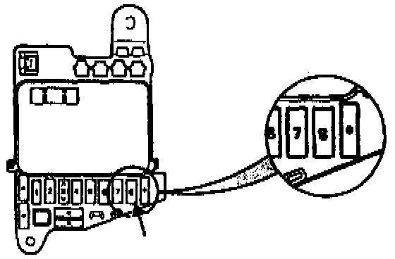
2. Check the phone fuses:
^ # 8 in the under-dash fuse box. (If the radio works, fuse # 8 is OK.) If the fuse is blown, the phone will power-up in locked mode even with the ignition key on.
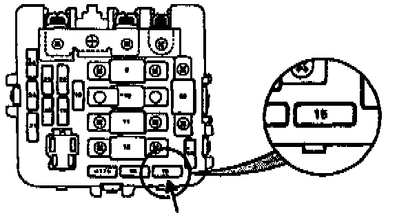
^ # 15 in the engine compartment fuse box. If the fuse is blown, the phone will power-up in locked mode even with the ignition key on.
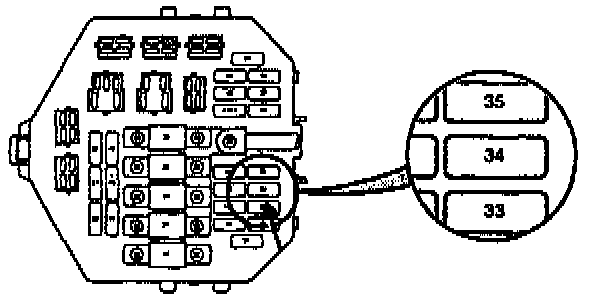
^ # 34 In the under-hood fuse box. If the fuse is blown, the phone will not power-up.
Are the fuses OK?
Yes - Go to the next step.
No - Replace any blown fuses and retest.
3. Inspect the handset as described in Service Bulletin 93-009. If possible, substitute a known-good handset and retest; if none is available, try wiggling the handset cord as you power-up.
Is the handset OK?
Yes - Go to the next step.
No - Replace the handset.[ ]
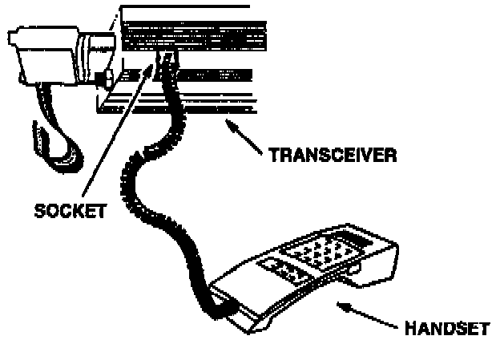
4. Disconnect the handset from the console and take it to the trunk. Open the trunk, remove the rubber plug from the socket in the underside of the transceiver, and plug the handset into that socket. Then, press the power button on the handset.
Does the phone power-up when you press the power button?
Yes - Go to step 14.
No - Go to the next step.
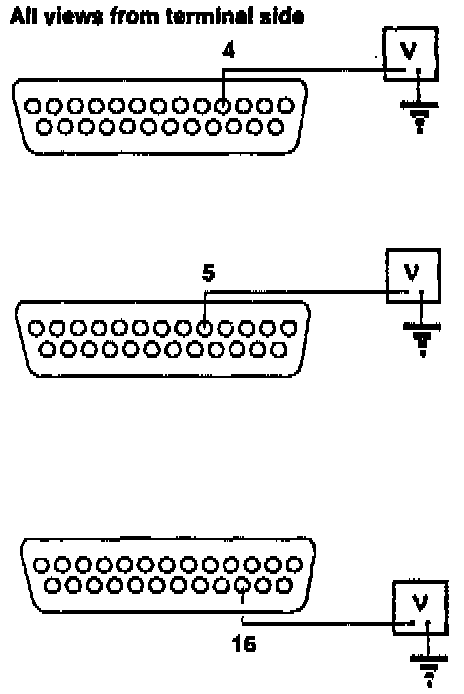
5. Set your DVOM to volts. Disconnect the 25-P connector from the transceiver. Then, turn the ignition switch on and check voltage at terminals 4, 5, and 16 of the 25-P connector.
Is battery voltage present at all three terminals?
Yes - Go to the next step.
No - Repair open between fuse # 8, # 15, or # 34 and the 25-P connector.[ ]
6. Set your DVOM to ohms. Check continuity to ground at terminal 3 and at terminal 17 of the 25-P connector.
Is there good continuity to ground at both terminals?
Yes - Go to the next step.
No - Repair open between the end of the transceiver ground wire and the 25-P connector.[ ]
7. Reconnect the 25-P connector to the transceiver. With the handset still plugged into the transceiver, get in the car and disconnect the handset harness at the 10-P connector.
Does the phone power-up when you press the power button?
Yes - Repair the short in the handset harness.[ ]
No - Go to the next step.
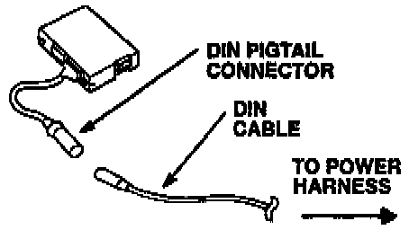
8. Disconnect the 13-P DIN cable from the DIN pigtail harness on the control box.
Does the phone power-up when you press the power button?
Yes - Replace the control box and 13-P DIN pigtail harness. (Harness is not available separately.)[ ]
No - Go to the next step.
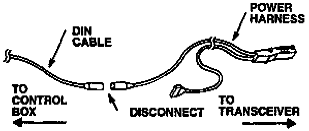
Disconnect the power harness DIN cable from the 13-P DIN cable.
Does the phone power-up when you press the power button?
Yes - Replace the 13-P DIN cable.[ ]
No - Go tb the next step.
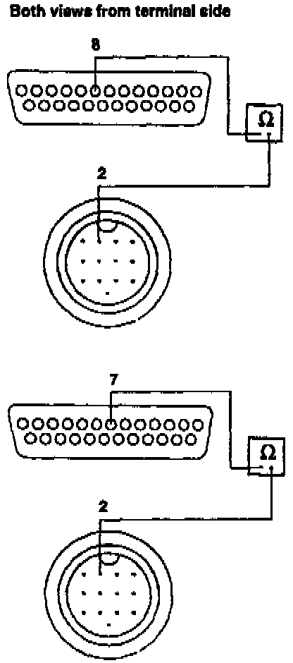
10. Turn the ignition switch off and disconnect the 25-P connector from the transceiver. Check continuity from terminal 2 at the 13-P DIN connector (on the power harness) and terminals 8 and 7 at the 25-P transceiver connector.
Is there continuity?
Yes - Go to the next step.
No - Replace the transceiver (power) harness.[ ]
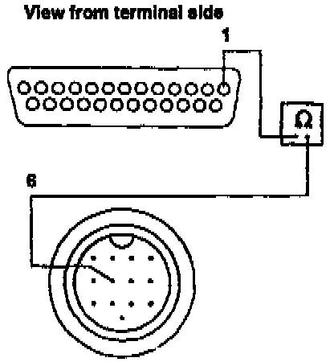
11. Check continuity from terminal 6 at the power harness DIN connector to terminal 1 at the 25-P connector.
Is there continuity?
Yes - Go to the next step.
No - Replace the transceiver (power) harness.[ ]
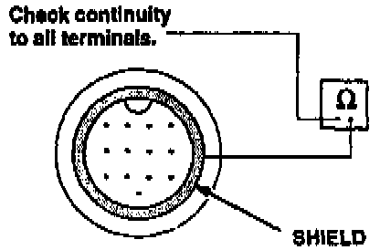
12. Check continuity to the DIN cable ground shield from all terminals in the 13-P DIN power harness connector.
Is there continuity to ground at any terminal?
Yes - Replace the transceiver (power) harness.[ ]
No - Go to the next step.
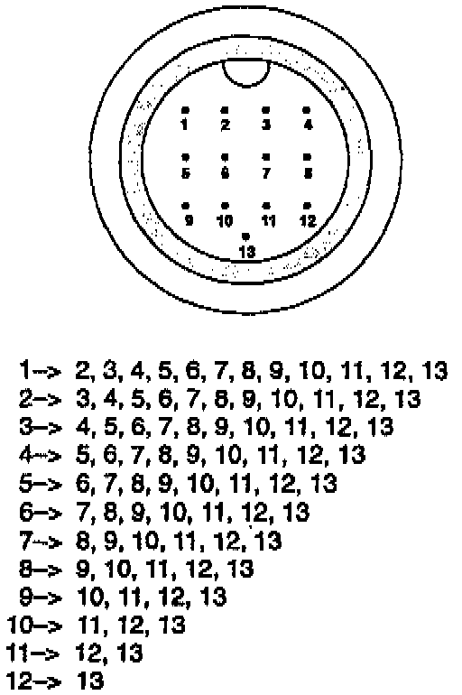
13. With the 13-P DIN cable and 25-P transceiver connectors disconnected, check continuity between every terminal in the DIN connector and each of the other terminals:
Is there continuity between any of the terminals?
Yes - Replace the transceiver (power) harness.[ ]
No - Replace the transceiver.[ ]
14. Disconnect the 25-P connector from the transceiver and the 14-P connector from the control box. Check continuity between these terminals:
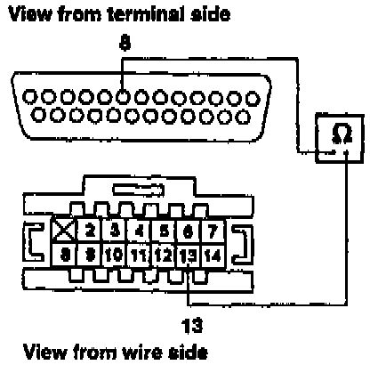
^ Between terminal 8 at the 25-P connector and terminal 13 at the 14-P connector.
^ Between terminal 1 at the 25-P connector and terminal 8 at the 14-P connector.
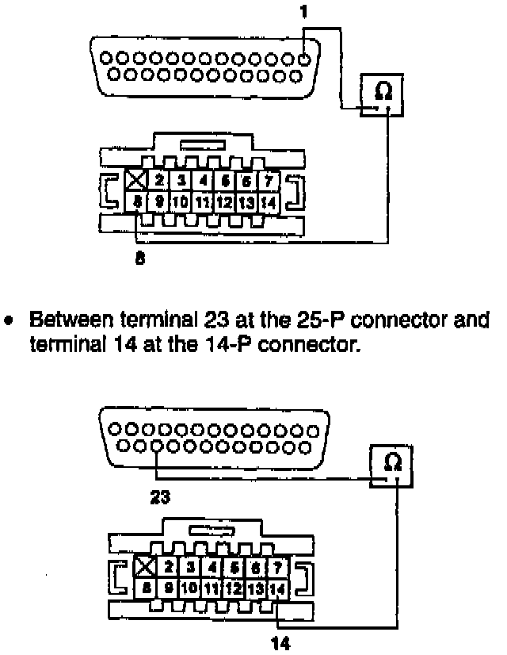
^ Between terminal 23 at the 25-P connector and terminal 14 at the 14-P connector.
Is there continuity in all three wires?
Yes - Go to the next step.
No - Repair open(s) in wire(s).[ ]
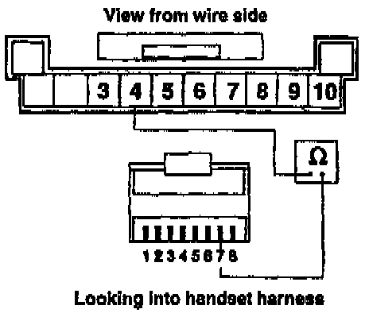
15. Disconnect the 10-P connector from the control box and check continuity between these terminals:
^ Between terminal 4 at the 10-P connector and terminal 7 at the handset harness connector.
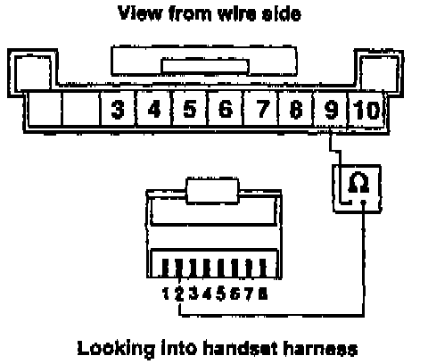
^ Between terminal 9 at the 10-P connector and terminal 2 at the handset harness connector.
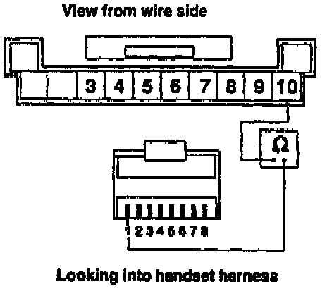
^ Between terminal 10 at the 10-P connector and terminal 1 at the handset harness connector.
Is there continuity in all three wires?
Yes - Go to the next step.
No - Replace the handset harness.[ ]
16. Reconnect all connectors except the one on the handset harness. (Leave the handset connected to the transceiver.)
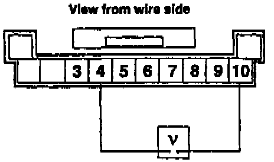
17. Set your DVOM for volts, and check voltage between terminal 10 and terminal 4 at the 10-P control box connector. Watch the voltage reading as you press the handset power button.
Does voltage drop to about 5 volts when you press the power button?
Yes - Go to the next Step.
No - Replace the control box.[ ]
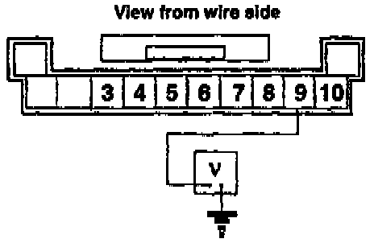
18. Check voltage between ground and terminal 9 at the 10-P control box connector. Watch the voltage reading as you press the handset power button.
Is there about 9.5 volts when you press the button?
Yes - Replace the transceiver. (See Note.)[ ]
NOTE:
If the condition of the handset is not known, test it before replacing the transceiver. Refer to Service Bulletin 93-009 for the handset inspection procedure.
No - Replace the control box.[ ]